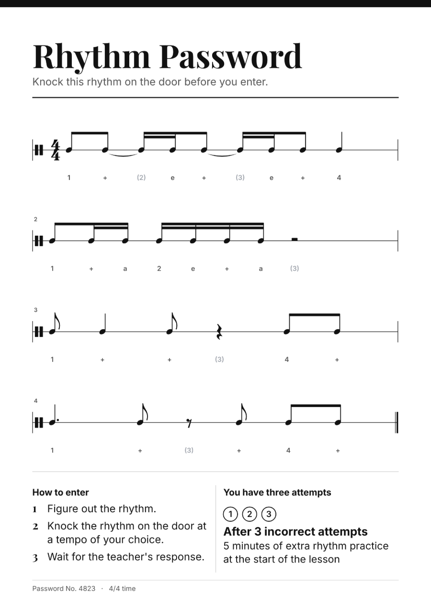
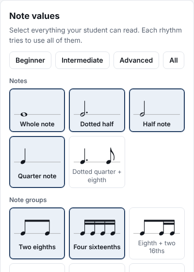
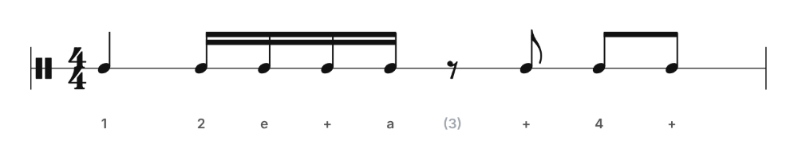
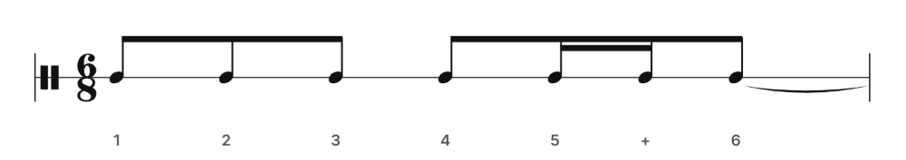
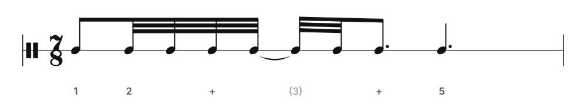
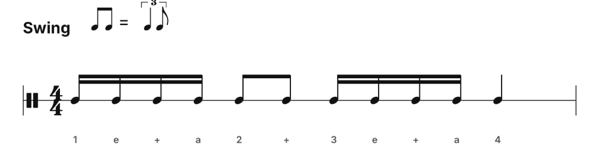
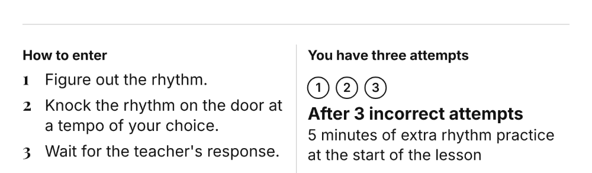
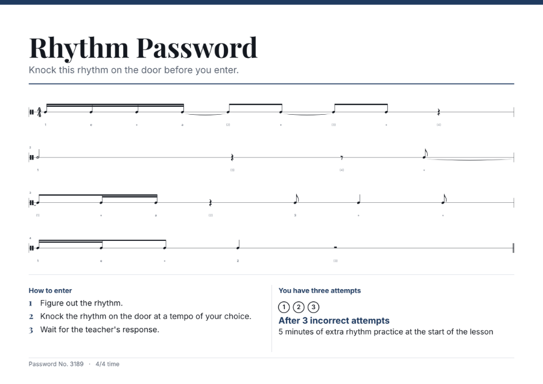

Everything KnockLock does.
Rhythm passwords for your studio door. Generate a 4 bar rhythm, print it as a poster, and your student knocks it to come in.
Scroll or press ↓
The idea
A password your student has to knock.
Print a rhythm and stick it on your studio door. Before coming in, your student reads it and knocks it on the door.
They get three attempts. After three wrong ones, the penalty printed on the poster applies. It turns the walk to the door into a quick sight-reading warm up.

Note values
Only what your student can read.
Tick the note values your student knows. Each new rhythm tries to use all of them, and nothing else.
- Whole, half, dotted half, quarter and dotted quarter notes
- Eighths, 16ths and 32nds, dotted rhythms and syncopation
- Eighth, quarter and 16th note triplets
- Rests from the whole rest to the 16th rest
- Ties, including ties across the barline
Beginner, Intermediate, Advanced and All presets get you started in one click.

Counting
The count is printed under every note.
Simple time is counted 1 e + a. Triplets read 1 T L (for trip-let), and 16th note triplets read 1 T L + T L.
Beats you hold or rest through are shown in brackets, like (3), so the student can see the beat even when they do not knock it. You can also switch the counting off for a harder poster.

Time signatures
Simple and compound time.
Choose 2/4, 3/4, 4/4, 6/8, 7/8 or 12/8. 7/8 is grouped 2+2+3.
Compound time has its own note groups, like three beamed eighths, the dotted quarter, and quarter plus eighth. They are counted in eighths: 1 2 3 4 5 6.


Swing
Straight, swing 8ths or swing 16ths.
In swing, the poster shows the standard swing marking at the top, so the student knows to play the eighths (or 16ths) long and short.
Swing works in 2/4, 3/4 and 4/4.

Engraving
Written the way a musician expects.
Every rhythm follows standard notation practice, so students learn to read real music, not a computer's version of it.
Three attempts
Penalties made for one‑to‑one lessons.
Pick from 19 penalties in four groups: practise it right away, extra lesson work, fun but useful, and gentle ones for young students. Or write your own.
The default is 5 minutes of extra rhythm practice at the start of the lesson.

Poster
Your studio, your look.
- A4 or US Letter, portrait or landscape
- Black and white (the default, cheapest to print), navy, charcoal and gold, burgundy or forest green
- Your own title, and your studio or teacher name at the top

Password number
Every rhythm has a number.
4821
Each poster carries a 4-digit password number. Type it into Recall a rhythm with the same note values and time signature, and the same rhythm comes back. Keep the number to check your student's knock, or to reprint a poster later.
Printing
A print-ready PDF in one click.
Press Download PDF and print it at 100% size. The music is drawn at print resolution, so it stays sharp on the door. What you see in the preview is exactly what prints.
Press New Rhythm as often as you like until you find one you want.
Offline and private
One file. No account. No internet needed.
KnockLock is a single web page with everything built in. Save index.html and it works without an internet connection, so you can share it with other teachers by email, chat or a USB stick.
Nothing is uploaded and nothing is tracked. Your choices are remembered in your own browser.
Make your first rhythm password.
Free and open source.
Or open KnockLock.html in any web browser. It works with no internet connection.